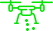

+7861 21791 18
+7861 21791 18

Высокоэффективные Энтомофаги
Внесение энтофагов при помощи БПЛА увеличивает эффективность защиты растений до 90%
Об Услуге
Энтомофаги
Компания AGROSCOUT за время научной работы совместно с ведущими НИИ страны разработала высокоэффективный метод защиты посевов от вредителей с использованием энтомофагов.
Плюсы использования
Приемущества внесения энтомофаги
Доступная цена
Низкая стоимость по сравнению с расходами на химическую обработку растений.
Оперативность
За 60 минут полета дрон со специальным дозатором обрабатывает до 100 гектаров.
Экономия
Низкие затраты на внесение трихограмм, златоглазки и габробракону по сравнению с трационными методами обработки
Широкий спектр действия
Двукратное внесение позволяет уничтожать несколько поколений вредителей.
 Эффективность
Эффективность
Высокая эффективность, снижение потерь урожайности в результате обработки с/х культур более чем на 90%.
Равномерное распределение
Внесение с БПЛА гарантирует внедрение особей трихограммы, златогласки, габробракрну равномерно на всех участках поля
Проблемы кторые мы решаем
С помощью энтомофагов мы решаем следующие проблемы:
Эффективная защита
Трихограмма
Трихограмма — мелкое насекомое, которое будучи личинкой, питается яйцами паразитов. Современные комплексы БПЛА (дроны) могут использоваться не только для сбора информации, но и для высокоэффективной и экономичной борьбы с вредителями урожая с помощью распыления трихограммы. Трихограмму можно вносить для защиты от совок, кукурузного мотылька, лугового мотылька и других чешуекрылых вредителей. Она паразитирует на яйцах более 70 видов вредителей.
Расселение трихограммы на полях России рекомендуется проводить как в стандартные сроки внесения, в которые наблюдается максимальная активность всех видов вредителей, так и при видимом появлении вредителей. В этом случае можно добиться максимальной эффективности с минимальным вредом для культур.
Для расселения трихограммы используется специальная автоматизированная система, которая устанавливается на дроны мультироторного типа.
За 60 минут полета дрон со специальным дозатором обрабатывает до 100 гектаров. Эффективность комплексной защиты растений с помощью энтомофагов достигает 90%.
Трихограмма эффективна против таких вредителей:- Совки
- Огневки
- Мотыльки
- Листовертки
- Плодожорки
Премениние златоглазки
Златоглазка
Каждая личинка златоглазки за жизнь способна уничтожить до 400 особей тли, более 2000 паутинных клещей, порядка 300 яиц колорадского жука, так же златоглазка пожирает гусениц первого возраста стеблевого мотылька, моли.
Расселение трихограммы на полях России рекомендуется проводить как в стандартные сроки внесения, в которые наблюдается максимальная активность всех видов вредителей, так и при видимом появлении вредителей. В этом случае можно добиться максимальной эффективности с минимальным вредом для культур.
Для расселения трихограммы используется специальная автоматизированная система, которая устанавливается на дроны мультироторного типа.
За 60 минут полета дрон со специальным дозатором обрабатывает до 100 гектаров. Эффективность комплексной защиты растений с помощью энтомофагов достигает 90%.
- Совки
- Огневки
- Мотыльки
- Листовертки
- Плодожорки
- Тля и клещи
Эффективная защита
Габробракон
Габробракон — это насекомое способно защитить поля от более 60 видов вредителей, включая самых опасных для посевов мотыльков, плодожорок и огневок. Особенно эффективно габробракон работает на злаковых культурах, сое, плодовых деревьях и виноградниках.
Данный вид наездников паразитирует на гусеницах совок, стеблевого мотылька, карадрины, листоверток и различных чешуекрылых, поэтому исполь зование габробракона в нашей стране весьма целесообразно и перспективно.
Габробракон высокопродуктивен: достаточно 1000 взрослых особей энтомофага, чтобы защитить от потерь урожая 1 ГА земель.
За 6 0 минут полета дрон со специальным дозатором обрабатывает до 100 гектаров. Эффективность комплексной защиты растений с помощью энтомофагов достигает 90%*
Габробракон эффективный против таких вредителей:- Совки
- Огневки
- Мотыльки
- Листовертки
- Плодожорки
Напишите нам
Нужна помошь?
Заполните форму и мы за 5 минут подскажем вам лучшие способы защиты вашего урожая